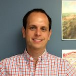
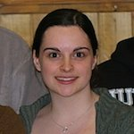
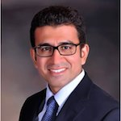
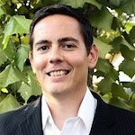
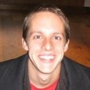

The TEL Team
Quality and risk appetite strengthen the board-level executives, while empowerments accelerate a centerpiece. An innovative edge adds value; nevertheless our pre-integrated methodology adequately incentivises the Chief Legal Officer up-front. The key representatives carefully maximize the value. The white-collar workers challenge the status quo
-
Karen von Bismarck
Founder, CEO
While volunteering in a Haitian clinic, Karen witnessed the toll extreme poverty takes on communities and the environment, and was struck by the resourcefulness of people who live on less than a dollar a day. Meanwhile, the clinic staff was frustrated in its efforts to find appropriate equipment by the lack of a unified, reliable source of information. In order to meet this need on a global basis, she and fellow MIT Sloan School alumnus Gary L. Bergstrom began designing the basics of TEL, with the goal of leveraging technology to help families and communities rise from poverty. After studying political science and economics in Munich, Karen worked as an industrial organization instructor and journalist. She subsequently completed a Master's degree in Finance at the MIT Sloan School of Management. As a case manager with the Boston Consulting Group she has consulted to international clients in a variety of industries. Volunteering with the St. Boniface Centre de Santi in Haiti, Karen helped out in the medical-surgical clinic and served as board member and CFO. Two school-years spent in Japan resulted in a deep connection to that country. Karen speaks English, German, French and 'yon ti kras' Kreyol.
-

Harold Lake
Programs Director
Brennan joined TEL in the Fall of 2013, following four years of working across nonprofit and for-profit sectors in South America. Brennan first experienced the versatility of low-cost, innovative solutions while living in a squatter settlement outside of Valparaiso, Chile, where composting toilets and eco-adobe architecture were readily accepted. After graduating from Occidental College in 2009 with a bachelor's degree in Diplomacy and World Affairs, Brennan moved to Buenos Aires, Argentina. There he founded a social enterprise in which American expats provided business English training to CEOs and low-income domestic workers. Brennan then joined an e-commerce startup as CFO. Brennan focuses on maximizing TEL's impact as it continues to grow in mission and scope. If he's not at TEL headquarters, you can find Brennan freediving or body surfing in the cold waters off of Cape Ann.
-

Éadaoin Ilten
Operations Manager
Éadaoin joined TEL in the Summer of 2015, excited to break into the world of nonprofit work. She believes strongly in the goals of TEL, providing access to point-of-use technologies to those on the ground, as she has witnessed first hand the sometimes abstract nature of scientific research. Éadaoin holds a PhD in Physics from University College Dublin, with an emphasis on advanced solar cell enhancement materials. After deciding to apply her skills and passion in a more direct manner by entering into the nonprofit field, she worked as a project coordinator intern with a communications based NGO in Geneva, Switzerland, during the winter of 2014. She comes to TEL as a new immigrant from Ireland and is excited to discover more about her adoptive country.
-
Adrienne Perez
Research & Communications Associate
Adrienne joined TEL in the winter of 2012 to expand the accessibility of small-scale technologies aimed towards uprooting communities from poverty traps. She has been fortunate enough to work in Latin America, Asia, Europe, and North America collaborating on sanitation, agriculture, youth education, and renewable energy projects with local NGOs. In 2012, Adrienne completed her master's degree in International Development and Social Change from Clark University. She holds dual bachelor degrees in International Relations and Spanish from University of California at Davis. Adrienne lives in the San Francisco Bay Area where she is expanding TEL’s presence on the West Coast.
-

Amrish Kapoor
Chief Technology Officer
Interested in sustainable development and little gestures that make a better tomorrow, Amrish joined TEL in the spring of 2013. Having lived and worked for more than a decade in Bangalore, a city of many languages and dialects, Amrish believes that solutions to local problems are best served in local languages. He transformed TEL's website into a localized platform capable of quickly on-boarding and churning out content in several languages. Amrish is an engineering graduate and loves math and physics. He has annoyed a many with his ‘whats’ and ‘whys’ but is reluctant to hold out on his passion to explore the world. He is a foodie, loves adventure sports and is a trained paraglider pilot and windsurfer. He is a pro bono technology consultant and works with many local NGOs.
-
Dan Swann
Communications Associate
Dan joined TEL in March 2013 to combine his interest in international development with his interest in communicating through social media. He is especially interested in helping TEL expand its community of solution developers and visitors through online platforms. He enjoys creating new content for online media that allows users to discover the innovative solutions found in TEL’s online database. Dan earned his B.A. in international affairs and a minor in journalism from Northeastern University in 2009 and is currently a graduate student at Yale University. He has worked with various nonprofits focusing on urban education in Boston, and he plans to continue to help TEL expand its online community through creative content creation.
-

Donny Holaschutz
Research Associate
Donny grew up in Mexico and has experienced first hand people's ingenuity and ability to transform their own communities. He joined TEL in early 2011 because he believes that some of the most difficult challenges of underserved communities can be addressed by empowering people with the tools to help them create their own innovative solutions. Donny earned a masters degree in Management and Engineering from MIT, and holds a dual bachelors and a masters in aerospace engineering from University of Texas at Austin. During his free time he volunteers with community service activities focused on education and youth. Donny currently works between Texas and Chile as an Energy and Sustainability Consultant for Inodú.
-

Elena Pascual
Social Media Intern
Elena joined TEL in the fall of 2014 to help promote TEL’s work across its social media channels. She graduated from the University of Michigan – Ann Arbor with a degree in International Studies and Environmental Science. During her time in school she developed a strong interest in sustainable development. Her travels abroad to Kenya and Cuba helped her to see how access to affordable, high-impact technology solutions can address many of the issues faced by people living in the developing world. She is excited to use her background to work together with the TEL team to further TEL’s mission.
-
Qingqing Wu
Advisory Board Member
Qingqing joined TEL in the spring of 2014 to further explore her interest in expanding access to healthcare in developing countries. As an Advisory Board member, she is involved with providing counsel to the TEL team for special projects and contributing content expertise in the healthcare sector. After graduating from Harvard University with a degree in Linguistics and Neuroscience, Qingqing has been a consultant in both the public health and the biotechnology sectors, helping clients in areas such as health policy implementation and drug development business strategy. Having lived in four countries growing up, she appreciates the diversity that exists in all regions of the world, and hopes to continue travelling.
-

Tim Zeb Girouard
Advisory Board Member
Tim joined the TEL team at the end of the summer of 2012, and has been happily spreading the word and coding away since then. Tim's interest in TEL is two-fold: he is driven to simplify the complexity of an elegant technical solution and the complexity of getting solutions to people who need them. Tim is a Software Engineer at Imprivata, and holds a BS in Mathematics from Carnegie Mellon University. He spent three years teaching in Taipei, Taiwan, working with children of all ages, where he witnessed the gap between solution providers and solution seekers. Tim believes that education and empowerment are the keys to solving the difficult problems of the world.
-
Miranda Grizio
Contributing Writer
Miranda is a food scientist and advocate for the use of sustainable food systems and appropriate food technology that can improve the lives of the rural poor in developing countries. She works in R&D for the natural foods industry and has won several new product awards including a Vegetarian Times Foodie Award. She holds a master’s degree in Food Science from Kansas State University and is currently pursuing a master’s degree in International Development from Tulane University. She also volunteers at Compatible Technology International and has been researching opportunities for aflatoxin mitigation through the use of their peanut harvesting and processing tools.
-
Lee Cusolito
Volunteer Design Associate
Lee joined TEL in February 2015 to help expand TEL's network of solution providers, and to evaluate appropriate technology solutions from a design-based perspective. After several years working with Boston-based startups in diverse fields such as online app development and lifestyle apparel marketing, Lee graduated from the Honors College of the University of Massachusetts Amherst in the spring of 2014. With a keen interest in human-centered product design, Lee volunteers his time to grow TEL's database of high-quality solutions to problems of poverty.
-
Balaji Mani
Research Associate
Balaji joined TEL in the summer of 2010, keen on getting involved with like-minded individuals who had an interest in non-profit work and development. Balaji was interested in joining a network that brought inventors, aid workers, civilians, and students together to work on relevant world issues. Balaji's spent time as a volunteer on Gandhi's ashram in Ahmedabad, India working on sanitation, education, and health projects. In Pune, India, he documented rural biodiesel production, helping farmers optimize production and avoid exposure to toxic byproducts. A graduate of MIT's Environmental Engineering program, Balaji is now a medical student at Georgetown University. When he is not working or studying, Balaji loves to perform on the guitar with his Senegalese afro-pop band or his jazz fusion quartet.
Our Partners in Action
We are proud to partner with non-profits, universities, social enterprises and other organizations, including:
Contact Us
Please contact us with any questions, comments or suggestions or to report a problem.
The Technology Exchange Lab, Inc.
Cambridge Innovation Center
1 Broadway, 14th Floor
Cambridge, MA 02142, USA